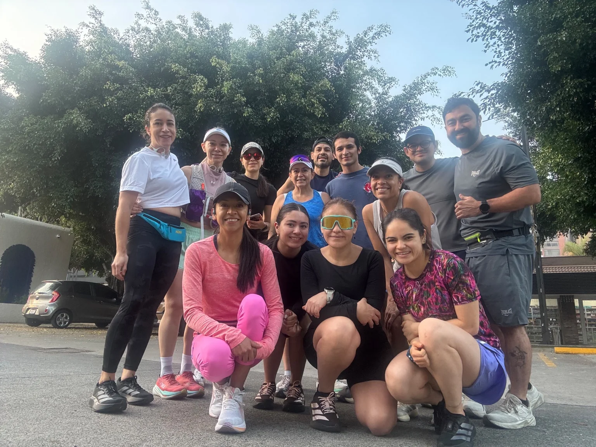
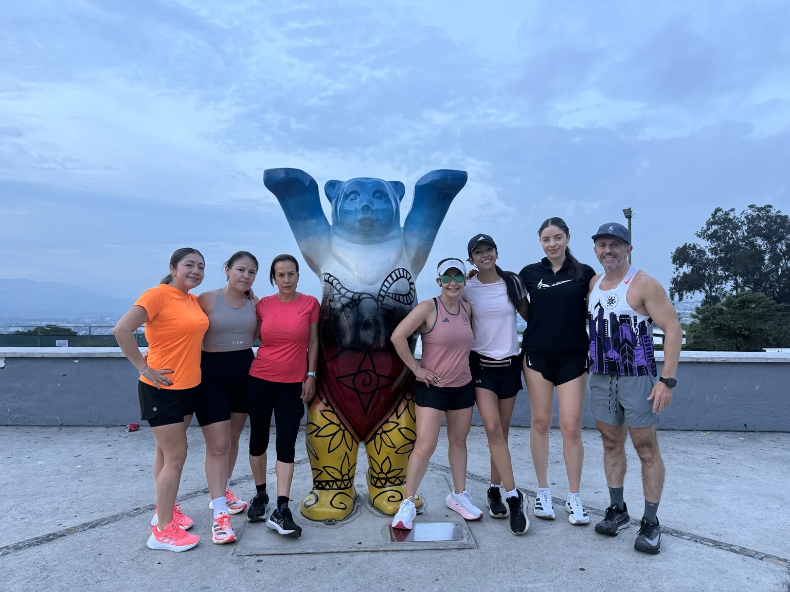
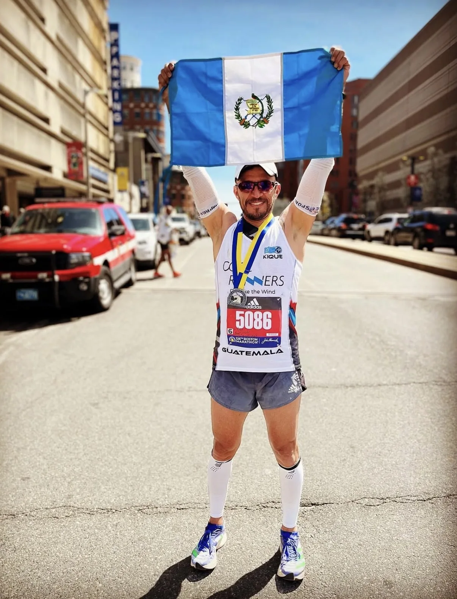
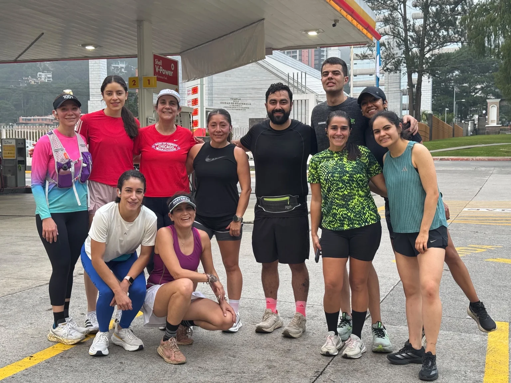
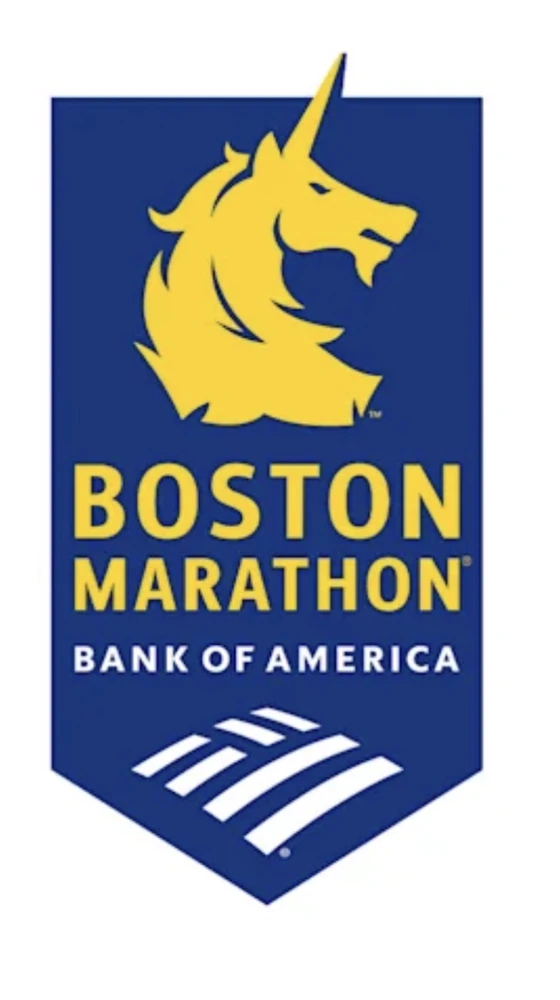
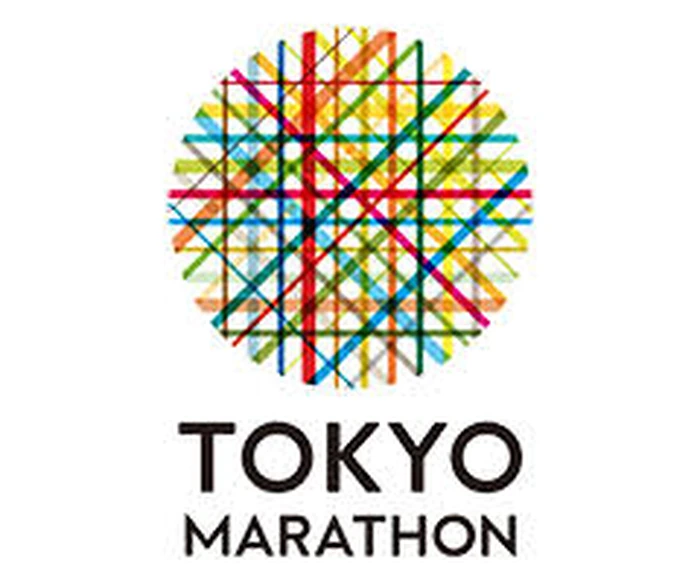
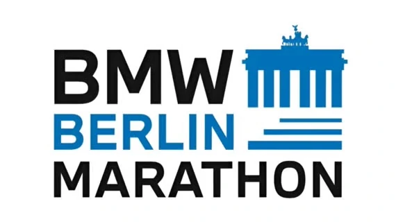
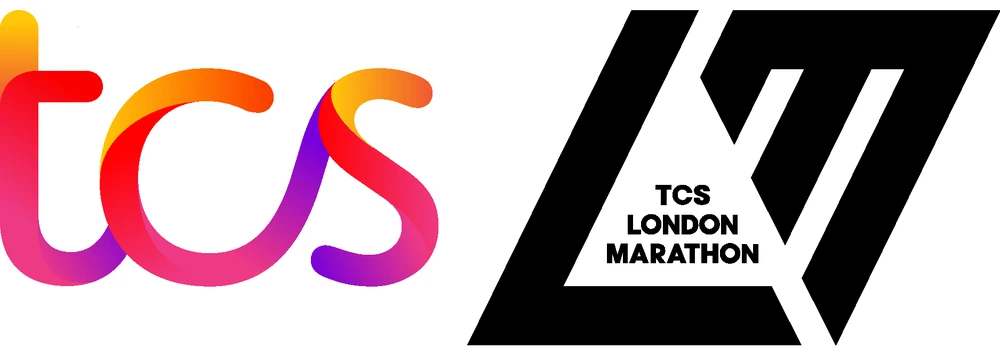
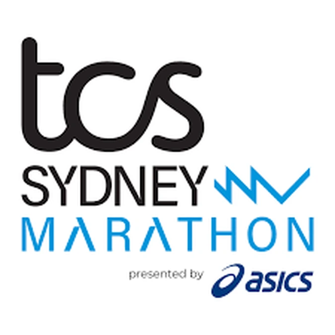

MAR01 / 04
05:00 AMTEMPO
Ritmos sostenidos que desarrollan resistencia y control del esfuerzo.
📍 FUTECA ZONA 14 ↗GUATEMALA · RUNNING COMMUNITY
Diferentes ritmos. Una misma pasión. Una comunidad que te acompaña en cada kilómetro.
Todos los niveles · Participar en el grupo no tiene costo
No importa si estás preparando tu primer 5K o tu siguiente maratón. Aquí hay espacio para ti.
CONOCE AL EQUIPO ↗

WEDesde tus primeros kilómetros hasta tus grandes metas.
Motivación, amistad y un equipo que siempre suma.
Únete a nuestras sesiones grupales cuando quieras.
Cuatro días, distintos estímulos y un mismo objetivo: disfrutar el proceso y seguir creciendo.
Ritmos sostenidos que desarrollan resistencia y control del esfuerzo.
📍 FUTECA ZONA 14 ↗Velocidad, coordinación y una zancada más eficiente.
📍 NOVENA CALLE · DÉCIMA PLAZA ↗Sumamos kilómetros, construimos resistencia y compartimos el camino.
📍 FUTECA ZONA 14 ↗Un rodaje tranquilo para disfrutar, conversar y recuperar.
📍 FUTECA ZONA 14 ↗Los enlaces de ubicación abren una búsqueda en Maps. Confirma el punto exacto y las indicaciones de cada sesión antes de asistir.
Los tiempos cambian. Las amistades se quedan.

COACH KIQUESi quieres ir un paso más allá, Coach Kique ofrece planificación individualizada a través de V.O2, con entrenamientos semanales que puedes sincronizar con Garmin o Apple Watch.
El coaching personalizado es opcional y de pago. Entrenar con la comunidad CoolRunners no tiene costo.
QUIERO MÁS INFORMACIÓN ↗Carreras, entrenamientos, sonrisas y esos momentos que nos recuerdan por qué corremos.



Estamos preparando nuestro Registro Histórico de Maratones: cada meta, cada ciudad y cada experiencia de los corredores de CoolRunners, incluso antes de unirse al equipo.
REGISTRAR MIS MARATONESUna sola inscripción · Hasta 100 maratones por envío · Datos privados







Maratones que inspiran nuestras historias · Los nombres sin logo se muestran como texto
¿Quieres unirte al grupo o conocer el coaching personalizado? Escríbenos. Nos encantará saber de ti.